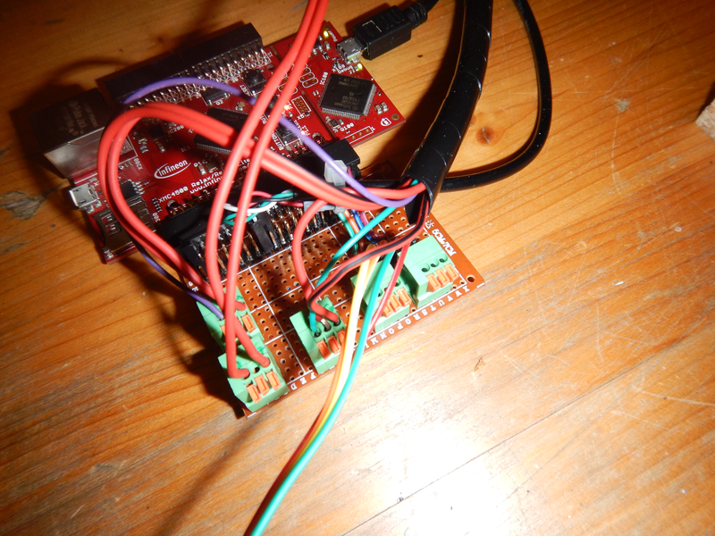
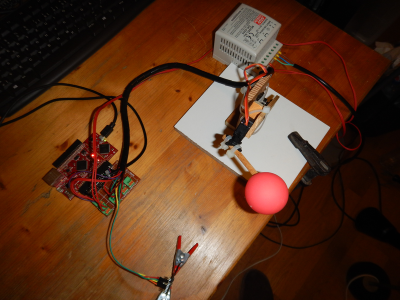
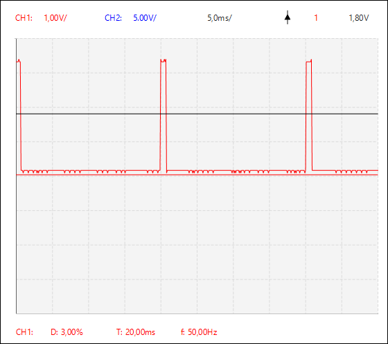
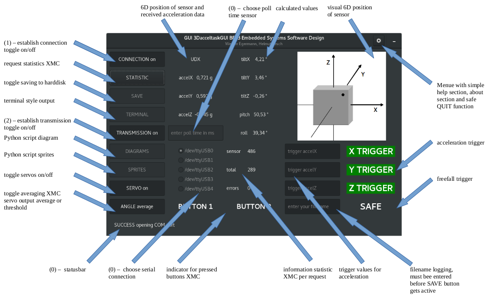

|
BEL3 ESS task
version 1.0 overhanding
I2C acceleration sensor with GUI
|
|
BEL3 ESS task
version 1.0 overhanding
I2C acceleration sensor with GUI
|
https://cis.technikum-wien.at/documents/bel/3/ess/semesterplan/tasks/tasks.html
| screenshot task description |
|---|

|
The realized task is generic and a "proof of concept" for some possibilities with the chosen Adafruit LIS3DH Triple-Axis Accelerometer.
As described in the definition the task is split into 2 major parts, the uC software for the Infineon XMC4500 and the GUI for the PC realized with GTK-3 + C and Python 3 + Pygame + Matplotlib.
The uC software includes a simple (bidirectional) UART communication protocol, libraries + drivers for
The raw data from the accelerometer, the 6D position and statistics can be requested by the PC application and the values are shown on the GUI. The rotation angles for all 3 axes and the pitch and roll angle are calculated within the PC application and shown on the GUI, also a simple frefall detection is include.
Within the GUI a statistic package (sent sensor readings, data packages, errors) can be requested, the data can be logged to harddisk, triggers for acceleration can be set and various settings like activating UART connection, requesting data from sensors, activating servos, changing between measurement averaging and "thresholding" for servo settings can be done.
BUTTON1 is used to switch on/off the servos and BUTTON2 is used to choose averaging/thersholding.
LED1 represents the PWM "percentage" of one servo, LED2 is on when GUI and XMC are connected, and toggles according when data is requested by the GUI.
2 python scripts can be started from the GUI, one to show possibilities for sprite rotation with the pygame library and one to show a graph for the accelerations.
The code is located in the folders
Details find in section "Files" in the doxygen documentation and further details inside the source code.
The graph shows the app > library > driver structure of all source code.
| dependency graph |
|---|

|
| calculations for PWM signal servos and necessary settings for counter and prescaler |
|---|

|
| calculation for angle correction sensor |
|---|
| sensor „Resch“ shows pitch angle up to maximum 85° - other direction seems ok with minimum -89° |
Thanks for this support!
cppcheck --enable=all --std=posix --std=c99 --force --template=gcc ./inc/3Daccel_app.h ./inc/3Daccel_out_driver.h ./inc/3Daccel_out_library.h ./inc/lis3dh_library.h ./inc/servo_driver.h ./inc/servo_library.h ./src/3Daccel_app.c ./src/3Daccel_out_driver.c ./src/3Daccel_out_library.c ./src/lis3dh_library.c ./src/servo_driver.c ./src/servo_library.c Checking inc/3Daccel_app.h ... 1/12 files checked 0% done Checking inc/3Daccel_out_driver.h ... 2/12 files checked 2% done Checking inc/3Daccel_out_library.h ... 3/12 files checked 9% done Checking inc/lis3dh_library.h ... 4/12 files checked 11% done Checking inc/servo_driver.h ... 5/12 files checked 13% done Checking inc/servo_library.h ... 6/12 files checked 14% done Checking src/3Daccel_app.c ... Checking src/3Daccel_app.c: DEBUG... 7/12 files checked 28% done Checking src/3Daccel_out_driver.c ... 8/12 files checked 37% done Checking src/3Daccel_out_library.c ... src/3Daccel_out_library.c:63: style: The scope of the variable 'ticks' can be reduced. src/3Daccel_out_library.c:65: style: The scope of the variable 'i' can be reduced. src/3Daccel_out_library.c:66: style: The scope of the variable 'smoothSignal1' can be reduced. src/3Daccel_out_library.c:66: style: The scope of the variable 'smoothSignal2' can be reduced. Checking src/3Daccel_out_library.c: DEBUG... 9/12 files checked 67% done Checking src/lis3dh_library.c ... 10/12 files checked 84% done Checking src/servo_driver.c ... 11/12 files checked 97% done Checking src/servo_library.c ... 12/12 files checked 100% done src/3Daccel_out_library.c:61: style: The function 'SysTick_Handler' is never used. src/3Daccel_out_library.c:276: style: The function 'getDouble' is never used. :: information: Cppcheck cannot find all the include files (use --check-config for details)
splint +posixlib -unrecog -standard +trytorecover -preproc -predboolint +matchanyintegral -exportlocal ./inc/3Daccel_app.h ./inc/3Daccel_out_driver.h ./inc/3Daccel_out_library.h ./inc/lis3dh_library.h ./inc/servo_driver.h ./inc/servo_library.h ./src/3Daccel_app.c ./src/3Daccel_out_driver.c ./src/3Daccel_out_library.c ./src/lis3dh_library.c ./src/servo_driver.c ./src/servo_library.c
Splint 3.1.2 --- 04 Aug 2017
src/lis3dh_library.c: (in function initMEMSsensor)
src/lis3dh_library.c:60:31: Function LIS3DH_SetAxis expects arg 1 to be
LIS3DH_Axis_t gets enum { LIS3DH_X_ENABLE, LIS3DH_X_DISABLE,
LIS3DH_Y_ENABLE, ..., LIS3DH_Z_DISABLE }:
LIS3DH_X_ENABLE | LIS3DH_Y_ENABLE | LIS3DH_Z_ENABLE
Types are incompatible. (Use -type to inhibit warning)
src/lis3dh_library.c: (in function configMEMSsensor)
src/lis3dh_library.c:86:32: Function LIS3DH_SetInt1Threshold expects arg 1 to
be u8_t gets int: 20
src/lis3dh_library.c: (in function get6Dposition)
src/lis3dh_library.c:165:37: Function LIS3DH_Get6DPosition expects arg 1 to be
u8_t * gets uint8_t *: &position
src/lis3dh_library.c: (in function getAxesRawData)
src/lis3dh_library.c:233:37: Passed storage data contains 3 undefined fields:
AXIS_X, AXIS_Y, AXIS_Z
Storage derivable from a parameter, return value or global is not defined.
Use /*@out@*/ to denote passed or returned storage which need not be defined.
(Use -compdef to inhibit warning)
Finished checking --- 4 code warnings
2 function in 3D_accel_out_driver.c had to be excluded for splint to avoid parse errors
void outputInitXMC(void)
{
XMC_GPIO_CONFIG_t config_out;
config_out.mode = XMC_GPIO_MODE_OUTPUT_PUSH_PULL;
config_out.output_level = XMC_GPIO_OUTPUT_LEVEL_LOW;
config_out.output_strength = XMC_GPIO_OUTPUT_STRENGTH_WEAK;
XMC_GPIO_Init(LED1, &config_out);
}
void inputInitXMC()
{
XMC_GPIO_CONFIG_t config_in;
config_in.mode = XMC_GPIO_MODE_INPUT_INVERTED_PULL_UP;
XMC_GPIO_Init(BUTTON1, &config_in);
XMC_GPIO_Init(BUTTON2, &config_in);
}
| sensor |
|---|

|
| XMC connector |
|---|

|
The servos are supplied by an external 5V power source.
| power |
|---|

|
Simple analog servos from Conrad used for the hardware
| servos |
|---|

|
Simple wooden construction for the servos
| big picture |
|---|

|
oscilloscope screenshots of PWM signal
| -90° / 0° | 0° | +90° / 180° |
|---|---|---|

| 
| 
|
The code is located in the folders
Details find in section "Files" in the doxygen documentation and further details inside the source code.
Graph of all GUI function calls.
| functions graph |
|---|

|
| GUI overview after start |
|---|

|
| GUI description |
|---|

|
(0) highlights values which have to be set before connection
(1) connect
(2) start transmission
GTK buttons are set active or inactive as needed, feel free to experiment!
Again thanks!
For the GTK GUI only cppcheck done.
cppcheck --enable=all --std=posix --std=c99 --force --template=gcc 3DacceltaskGUI.c 3DacceltaskGUI.h menucallbacks.c menucallbacks.h Checking 3DacceltaskGUI.c ... Checking 3DacceltaskGUI.c: __FreeBSD__;__linux__... 1/4 files checked 25% done Checking 3DacceltaskGUI.h ... Checking 3DacceltaskGUI.h: __FreeBSD__;__linux__... 2/4 files checked 29% done Checking menucallbacks.c ... menucallbacks.c:488: style: The scope of the variable 'mode' can be reduced. menucallbacks.c:491: style: The scope of the variable 'requestConnection' can be reduced. menucallbacks.c:560: style: The scope of the variable 'requestServoOn' can be reduced. menucallbacks.c:597: style: The scope of the variable 'requestAveragePWM' can be reduced. Checking menucallbacks.c: __FreeBSD__;__linux__... 3/4 files checked 95% done Checking menucallbacks.h ... Checking menucallbacks.h: __FreeBSD__;__linux__... 4/4 files checked 100% done :: information: Cppcheck cannot find all the include files (use --check-config for details)
Interesting and demanding task - especially the GUI.
 1.8.13
1.8.13